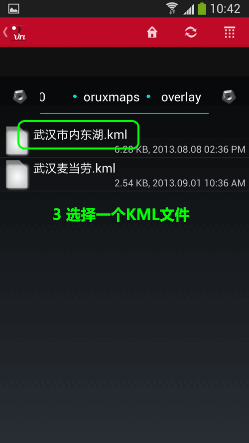
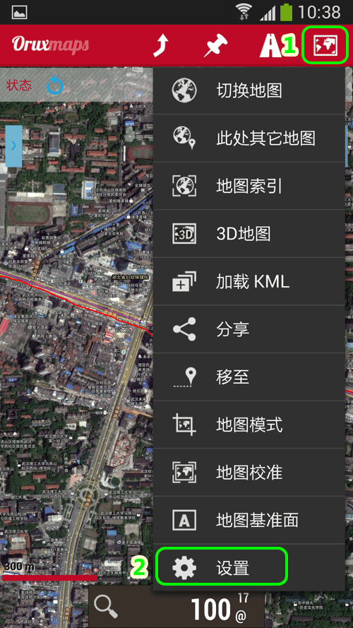
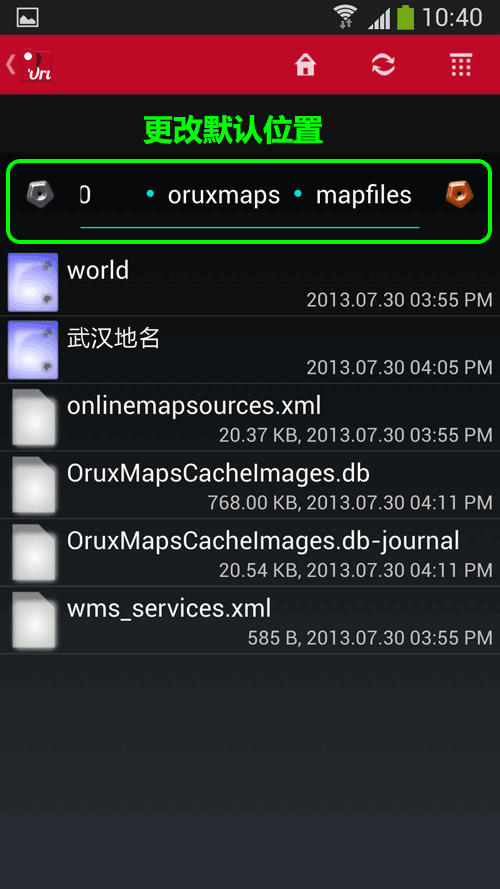

|
| 首页 | GeoTIFF | 今日花园Maps | OruxMaps | OZI | 资源 | 软件 | 联系 |
| 当前位置：OruxMaps ---> 在OruxMaps地图中加载KML或者GPX的线路与航点 |
在OruxMaps地图中加载KML或者GPX的线路与航点OruxMaps兼容谷歌地球的KML格式文件也支持GPX格式文件，要想在OruxMaps显示自己的线路与航点信息，只需要导入这些KML格式或者GPX格式的标注文件。如下图所示： |
|
上图中橘黄色线是线路，橘黄色图标是航点。在OruxMaps中显示的航点只是一个没有名称的图标，点击图标会弹出航点名称的信息窗口。如下图所示： |
|
下面介绍在OruxMaps中导入KML格式或者GPX格式文件的方法： 1) 在OruxMaps的安装目录下，overlay文件夹中只能放KML文件。 2) 在OruxMaps的安装目录下，tracklogs文件夹中即可放KML文件也可放GPX文件，如下图所示： |

|
3) 调用KML格式文件的步骤如下图所示： |

|
4) 调用GPX格式文件的步骤如下图所示： |
|
5) 也可以把放置KML文件的默认位置设置到别的地方。方法如下图所示： |


|
更改路径参数方法如下图所示： |


|
路径参数更改好后，长按最后一个文件夹名称保存参数，如下图所示： |

| www.todaygarden.net |
版权所有 2010-2020 今日花园 |